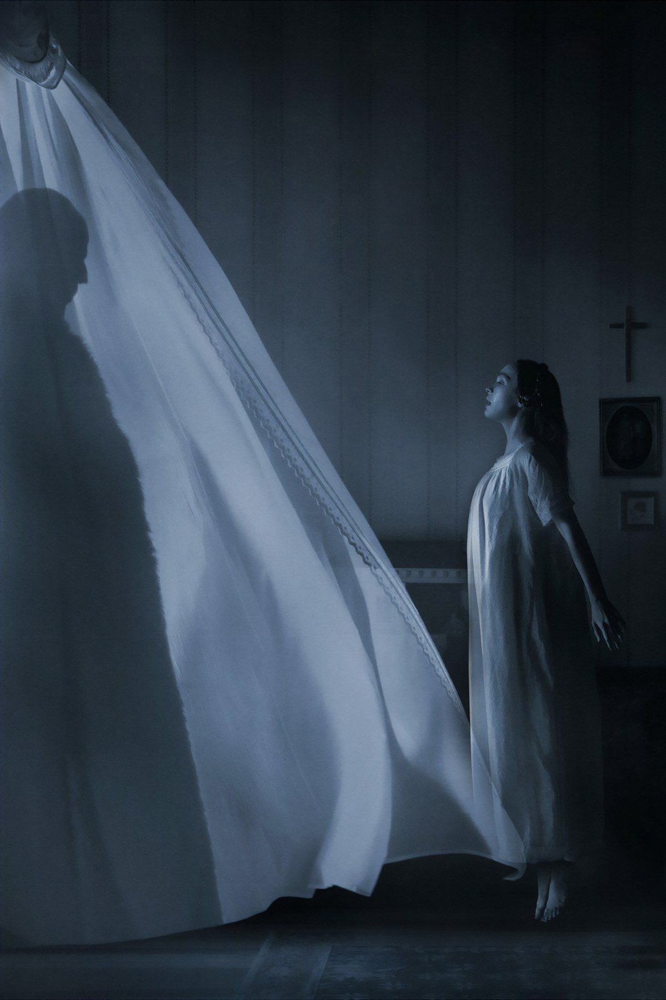

Su Netflix
Cosa vedere su Netflix: recensioni, curiosità e approfondimenti della redazione su film e serie in abbonamento, con la disponibilità aggiornata.
Film e serie su Netflix

Squid Game – Stagione 1
Giochi da cortile e debiti veri: perché il primo ciclo di Hwang Dong-hyuk regge meglio dei due che l'hanno seguito

Stranger Things – Stagione 1
Un bambino scomparso e una parete di lucine: rivista dopo il finale, l'esordio resta il capitolo più compatto della serie

Fast & Furious 5 (2011): la recensione
Dal garage alla rapina di Rio: perché il quinto capitolo, con Dwayne Johnson e un caveau trascinato per la città, resta il più compatto della serie

Tenet: la trama e il finale spiegati (spoiler)
Un oggetto che viaggia all'indietro, una battaglia in due direzioni e un amico che sapeva già tutto: come si rimettono in fila i pezzi del film di Christopher Nolan

Il sesto senso, il finale spiegato (spoiler)
Perché Malcolm non si accorge di essere morto e dove Shyamalan ha nascosto la verità fin dalla prima scena

Dark, il finale spiegato (spoiler)
Tre mondi, un nodo e un padre che prova a salvare la sua famiglia: cosa succede davvero nell'ultimo episodio della serie tedesca di Netflix

Interstellar, il finale spiegato (spoiler)
Il buco nero, la libreria e l'orologio: cosa succede a Cooper negli ultimi quaranta minuti del film di Nolan e cosa è scienza e cosa invenzione

Stranger Things – Stagione 5
Tre volumi, otto episodi e un finale di oltre due ore: i fratelli Duffer chiudono Hawkins tra grandi emozioni e qualche passo falso

Wednesday – Stagione 2
Tim Burton torna dietro la macchina da presa, arrivano Steve Buscemi e Lady Gaga, Jenna Ortega resta magnetica: una seconda stagione più ricca, ma anche più dispersiva

Squid Game – Stagione 3
Sei episodi per chiudere il fenomeno coreano di Netflix: un finale cupo, coraggioso e potente, che però corre troppo

Nosferatu
Robert Eggers rifà il vampiro di Murnau con una messa in scena gotica di rara bellezza: Lily-Rose Depp è il cuore del film, il mostro un po' meno, e la seconda metà perde mordente

Sonic 3: il film con Keanu Reeves, la recensione
Il terzo capitolo gioca la carta Shadow e mette Jim Carrey in un doppio ruolo: più ambizioso dei primi due, ma sempre con la leggerezza di un film per tutta la famiglia

Nosferatu di Eggers: 6 curiosità dal set
Un progetto rimandato per quasi dieci anni, un vampiro che parla una lingua morta, una voce costruita con una cantante d'opera e un castello in Romania: il remake di Robert Eggers raccontato da dietro le quinte, senza svelare la trama
Le piattaforme cambiano spesso: in ogni articolo trovi la data dell'ultimo aggiornamento. Altre piattaforme: Prime Video · Disney+ · Apple TV · HBO Max · Sky e NOW